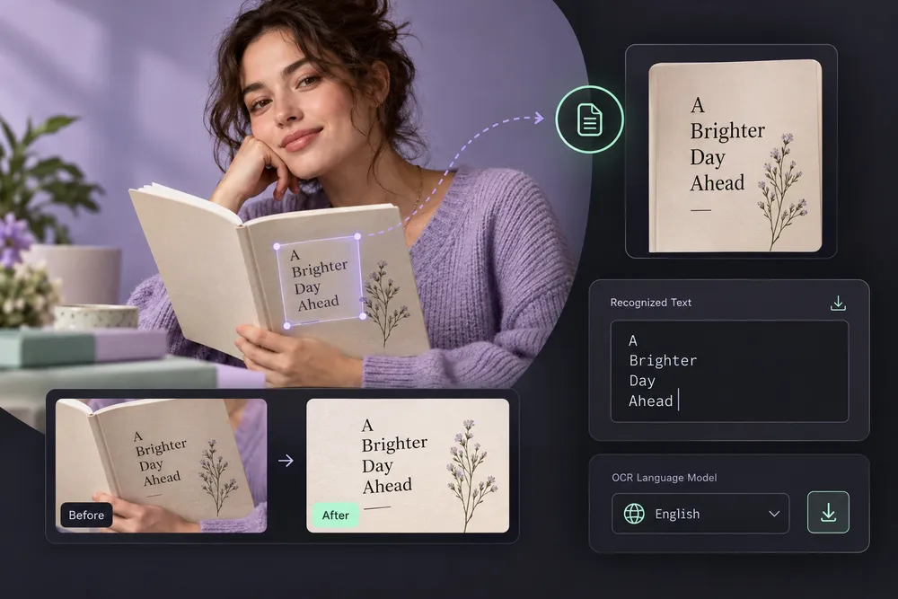

Image to Text · OCR
Recognize printed text locally with downloadable OCR language models.
Model-based editing can help with tasks that ordinary geometry cannot solve, such as synthesizing an expanded background or reconstructing a damaged region. Its output is an interpretation and can invent detail. Review faces, hands, writing and repeated textures carefully. Use portraits with permission, and keep generated alterations out of records that need to remain an accurate account of an event.
How to use Image to Text · OCR ↓How to use Image to Text · OCR
Extract printed English text locally from a JPG, PNG or WebP. The instructions below explain the actual controls in this editor.
Choose your source
Select a file or drop it into the upload area. The source stays on your device for local tools. Use New photo in the editor to replace it and reset the preview.
Set the controls
Select recognition language for printed text. The OCR engine downloads its language model.
Review the preview
Review every word and number in the editable result; handwriting may be inaccurate. On a phone, swipe the bottom tool strip sideways to find more settings; tap a tool to open its controls while the image remains visible.
Export and check the result
Choose the output format and quality where offered, select Export, and download the result. Keep the original file and inspect the saved copy at full size. Large images can exceed mobile browser memory.
Useful editing, with an honest processing boundary
OCR runs locally after its engine and language models download. Other AI workspaces contact the configured processing endpoint only after you choose Run and consent to the upload. Availability depends on the model services enabled by the site owner. An unavailable service is shown explicitly; a standard resize or softening filter is never presented as an AI result.
- Recognize printed text locally with downloadable OCR language models.
- Use a dedicated URL and controls tailored to this operation.
- Keep the source separate from the downloaded result.
- Read visible output dimensions, format and processing status.
OCR runs locally after its engine and language models download. Other AI workspaces contact the configured processing endpoint only after you choose Run and consent to the upload. Availability depends on the model services enabled by the site owner. An unavailable service is shown explicitly; a standard resize or softening filter is never presented as an AI result.
Questions, answered
What does Image to Text · OCR do?
Recognize printed text locally with downloadable OCR language models.
Does it change my original file?
No. The workspace exports a separate result. Keep the source if you may want another version.
What should I check before using the result?
OCR runs locally after its engine and language models download. Other AI workspaces contact the configured processing endpoint only after you choose Run and consent to the upload. Availability depends on the model services enabled by the site owner. An unavailable service is shown explicitly; a standard resize or softening filter is never presented as an AI result.
Are there any practical limits?
Very large files can exceed browser memory. Specialized source formats need a supported decoder, and the saved image may not retain source metadata.
Will this replace my original file?
The tools create a separate output. Keep the original until you have checked the exported file; the site does not provide cloud project backups.
Can I publish the result?
Use source media you own or have permission to edit. Check the destination’s requirements and the rights of anyone shown before publishing.